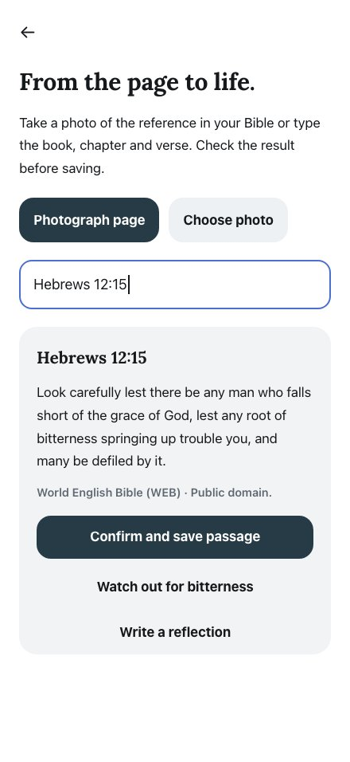

Vivid Bible
Bible micro-lessons you can read in a few minutes: the scene, the revealed verse, the takeaway and a simple practice. In English, Portuguese and Spanish.
For iPhone
How it works
One idea at a time, from the page to your life.
Every card follows the same short path. You understand the passage, see the verse and leave with something concrete to live today.
The scene
The context of the passage in a few lines: who, where and what was at stake.
Reveal
The verse appears at the right moment, with its full reference.
Take away
The principle that crosses the centuries, without hype or ready-made formulas.
Practice
One simple step to put the idea into practice today.
The app
Clean, calm and made for reading.
Text comes first, font size is adjustable and nothing competes with your reading.

Features
Everything that helps you read, remember and practice.
Offline Bible
Browse all 66 books in English, Portuguese and Spanish, even without internet.
Listen
Hear cards and books in sequence, at your own pace.
Animated stories
Short episodes that show the scene before the lesson.
Collections and saved
Save passages and build collections to come back to.
Journal and history
Write reflections and keep track of what you have read.
Reminders
Pick a time and get a gentle invitation to read.
Stories to watch
The scene before the lesson.
Short 3D-animated episodes tell Bible passages faithfully, in today's language. You watch, understand the context and carry the lesson with you.
Artistic representation created with the help of artificial intelligence. The Bible text quoted is identified in each episode.
Start with the next page.
A few minutes a day, one idea at a time.